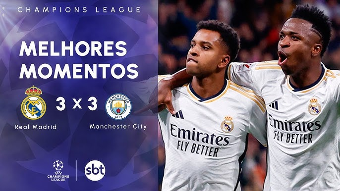

REAL MADRID VS MANCHESTER CITY
Em jogo eletrizante, Real Madrid de Rodrygo e Vini JR empatam com os cityzens comandados pro Guardiola

No primeiro avanço, o time visitante já abriu o placar. Bernardo Silva aproveitou decisão questionável de Lunin ao montar barreira com um jogador e acertou cobrança de falta, colocando os ingleses em vantagem no segundo minuto de jogo.
O Real saiu na frente do placar com gols aos 12 e aos 14 minutos. Ambos tiveram desvios no meio do caminho que atrapalharam o goleiro Ortega, sendo que o primeiro deles foi oficialmente considerado gol contra de Rúben Dias. A segunda bola na rede saiu após grande jogada da dupla de ataque Vinicius Jr e Rodrygo, finalizada pelo camisa 11
Após a vantagem conquistada fora de casa ruir, o time de Pep Guardiola sofreu para criar jogadas. Os Citizens passaram 24 minutos sem finalizar no primeiro tempo, e viram o Real gerar chances em contra-ataques com Vini e Rodrygo.
O jogo continuava complicado para o City, mas a situação se reverteu com dois golaços de fora da área. Especialmente o gol de empate do time inglês, aos 21 da etapa final, recolocou o time de Guardiola no jogo animicamente